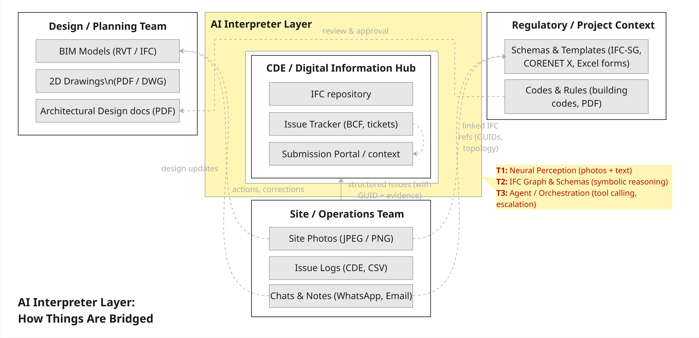
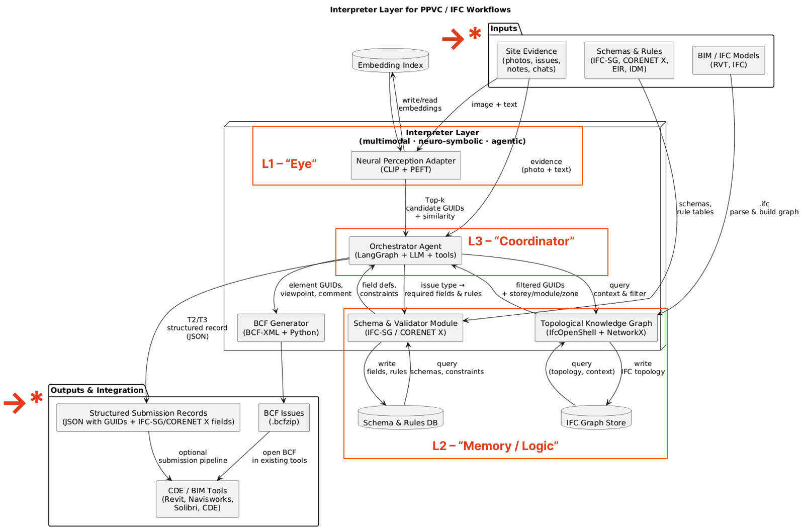

The AEC Neuro-Symbolic Interpreter [In-progress]
Bridging the "Semantic Gap" between Messy Site Data and Structured BIM
1. Motivation & Opportunity
Current AI research in Architecture, Engineering, and Construction (AEC) predominantly clusters into three trajectories:
- Streamlining Heterogeneous Data: Aligning disparate formats (drawings, schedules, site records) via multimodal training.
- Conditional Generation: Generating 3D geometry or BIM models directly from prompts or sketches.
- Context Understanding: Leveraging LLMs as conversational agents to retrieve information.
The Gap: While these technologies generate new data efficiently, they struggle to interpret the messy, unstructured evidence found in ongoing construction projects.
The Question: How can we use AI not just to generate models, but to reliably align unstructured site evidence (photos, chat logs) with strict regulatory schemas (IFC-SG) without information loss?
2. The Problem: "Which Window is This?"
In modern Modular Construction (PPVC), geometric repetition creates a massive disambiguation challenge.
- The Ambiguity: A query like "The master bedroom window has a crack" returns 200+ identical GUIDs in a high-rise BIM model.
- The Noise: Site teams communicate in high-entropy, mixed-language (e.g., "Singlish", informal shorthand) that standard LLMs fail to parse accurately.
- The Silos: 4D Schedules, 3D Models, and Site Photos exist in disconnected databases.
3. The Solution: A 3-Layer Neuro-Symbolic Architecture
The 3 layers:
- RQ1 (T1) – Cross-modal alignment: photo/issue → IFC element or GUIDs.
- RQ2 (T2) – Schema-aware mapping: text/forms/context → Compliance fields.
- RQ3 (T3) – Agentic policy: interpreter tool calling. *RQ as Research Questions, T as Task
Key: Agentic AI as the Orchestrator (Macro-Level)
- Goal: Cross-Modal Disambiguation.
- Tech: Google Gemini 2.5 Flash via Model Context Protocol (MCP).
- Function: An agent that utilizes Abductive Reasoning. By correlating visual cues (e.g., seeing trees vs. sky) with 4D Construction Schedules, it filters the search space from 200+ candidates down to the single correct GUID.
System Architecture
4. Demo & Results

A. The Semantic Gap (Before): Unstructured site data remains disconnected from BIM schemas, creating ambiguity and requiring manual interpretation.
B. Context-Aware Resolution (After): The dual-layer system transforms noisy input into precise BIM references through fine-tuned language understanding and visual-temporal reasoning.
5. Implementation & Tech Stack
This prototype was built as a proof-of-concept for my Master's Thesis at Carnegie Mellon University.
- Core Logic: Python, LangChain, LangGraph.
- BIM Processing: IfcOpenShell, Neo4j (Graph Database).
- AI/ML: Unsloth (Fine-tuning), OpenAI CLIP (Visual Matching), Google Gemini (Reasoning).
- Protocol: Model Context Protocol (FastMCP) for standardized tool calling.